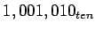
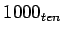

การกระทำที่คู่ตรงข้ามกับการคูณคือ ``การหาร'' (Divide) ซึ่งการหารเกิดน้อยกว่า และมีความยุ่งยากมากกว่าในการคำนวณในฮาร์ดแวร์ อีกทั้งมีปัญหาเพิ่มเติมเมื่อเกิดการหารด้วย 0 ที่ได้คำตอบเป็นอนันต์ และเป็นการคำนวณทางคณิตศาสตร์ที่มีผลลัพธ์ไม่สามารถแสดงค่าได้
จากความรู้ระดับ ประถมศึกษา เรามาทดสอบการ หารยาว เลขฐานสิบโดยกำหนดให้มีเพียงเลข 0 กับ 1 ในหลักต่างๆ ตัวอย่างเช่นทำการหาร  ด้วย 
1001 Quotient
---------
Divisor 1000 | 1001010 Dividend
-1000
-----
10
101
1010
-1000
-----
10 Remainder